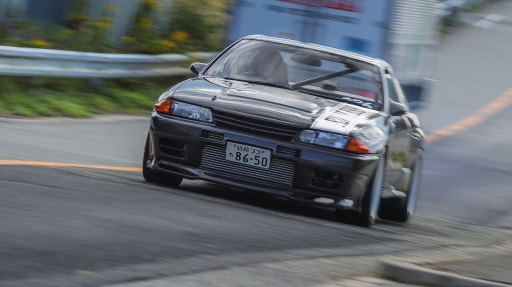
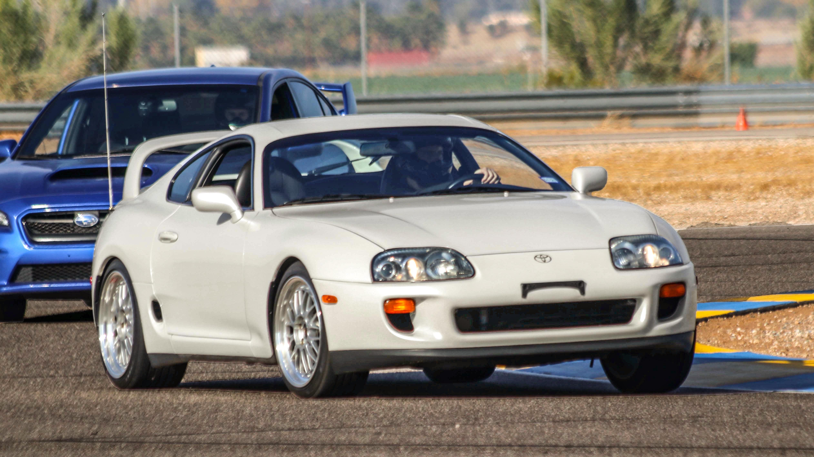
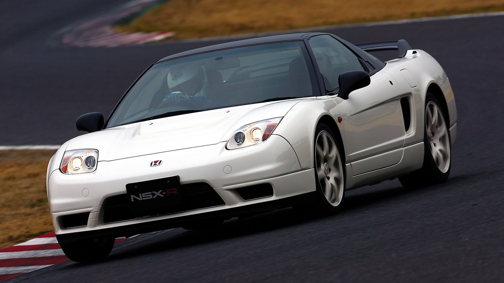

Specs & History
Nissan Skyline GT-R R32
- Engine: 2.6L RB26DETT inline-6 twin-turbocharged
- Power: 276 hp (officially, though often underrated)
- Transmission: 5-speed manual
- Drivetrain: ATTESA E-TS all-wheel drive
- 0 - 60 mph: ~5.6 seconds
- Top Speed: 156 mph (251 km/h)
The R32 Skyline GT-R, nicknamed "Godzilla," was introduced in 1989 and quickly dominated motorsports, especially touring car racing. It was the first Skyline to feature the advanced ATTESA E-TS all-wheel-drive system and the Super-HICAS four-wheel steering, making it a technological marvel of its time. Its performance and tuning potential made it a legend in the JDM community.
Toyota Supra MK4
- Engine: 3.0L 2JZ-GTE inline-6 twin-turbocharged
- Power: 276 hp (officially)
- Transmission: 6-speed manual or 4-speed automatic
- Drivetrain: Rear-wheel drive
- 0 - 60 mph: ~4.6 seconds
- Top Speed: 155 mph (250 km/h)
Produced from 1993 to 2002, the MK4 Supra is renowned for its robust 2JZ engine, which is highly tunable and capable of extreme power outputs. It gained worldwide fame through motorsports and pop culture, especially the Fast & Furious franchise. Its sleek design and performance capabilities make it one of the most sought-after JDM sports cars.
Honda NSX
- Engine: 3.0L C30A V6 naturally aspirated
- Power: 270 hp
- Transmission: 5-speed manual or 4-speed automatic
- Drivetrain: Rear-wheel drive
- 0 - 60 mph: ~5.0 seconds
- Top Speed: 168 mph (270 km/h)
Launched in 1990, the NSX was Honda's first supercar, featuring an all-aluminum monocoque chassis and mid-engine layout. It was praised for its reliability, handling, and everyday usability, challenging European exotics. The NSX introduced technologies like VTEC and was developed with input from Formula 1 legend Ayrton Senna.